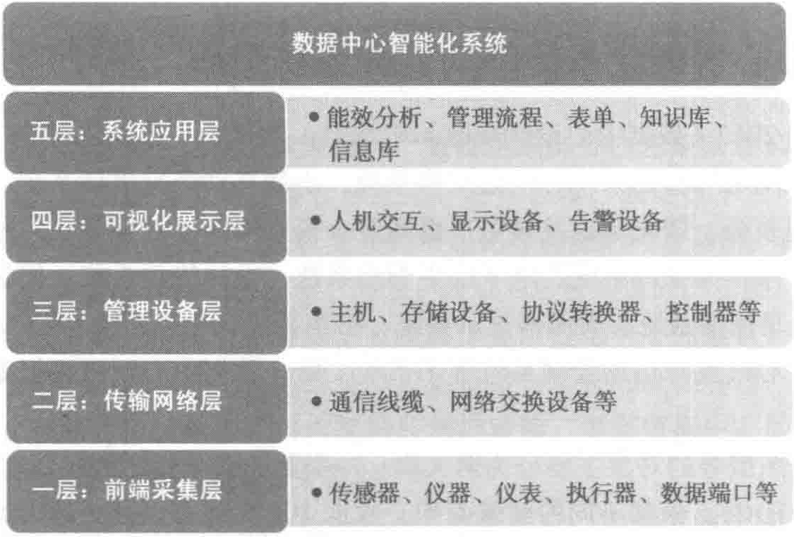

综合应用系统平台是非常必要的。
数据中心智能化平台是一个数据采集、加工处理、统计分析的数据管理平台。它需要对数据中心内的供配电系统、UPS电源系统、防雷接地系统、空调制冷系统、通风系统、消防系统、安防系统等设备的运行状态，数据中心内的环境温湿度、洁净度、能源使用情况等进行实时监控和记录，利用采集到的数据，反映数据中心的运行状态，为运维人员发现问题、解决问题提供依据，为数据中心的安全运行提供保障。
6.1.1 系统架构与组成
数据中心智能化系统主要由前端采集设备、执行机构、传输网络、数据处理设备、数据存储设备、系统软件、显示设备、告警设备及其集成的子系统共同组成。
从智能化系统的物理框架角度划分，可以分为五个层次，如图6-1所示。

6.1.2 前端采集层
针对数据中心的潜在隐患，在设计前端采集层时，应积极避免各类威胁到数据中心安全的因素。为保障数据中心能源的可靠和环境安全，前端采集的各类设备起到了十分关键的作用。
1. 供配电系统的监控
（1）电力监控子系统
在数据中心应用中，中压配电柜除担负着将来自电网的电力安全可靠地分配给数据中心使用外，也要确保数据中心用电的同时不会对上游电网产生不利影响。因此，中压配电柜的监控系统对维系数据中心安全可靠、绿色地运行起着至关重要的作用。